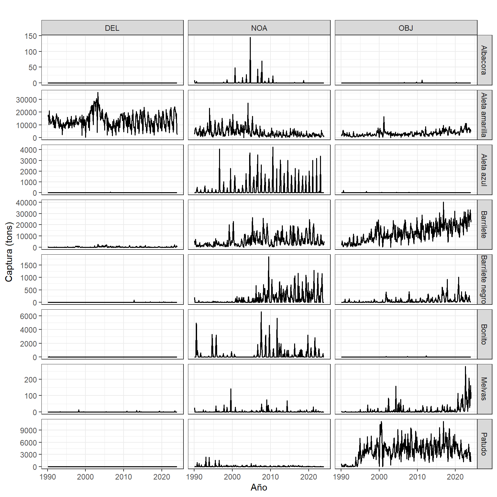
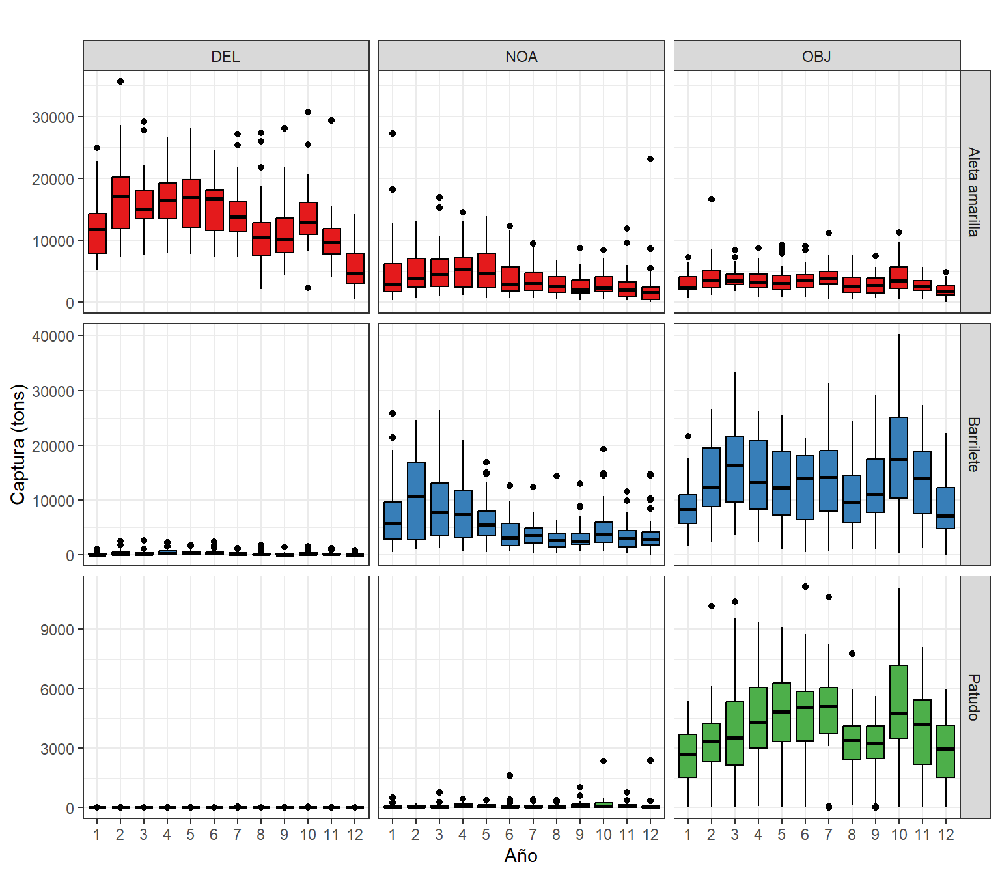

Los archivos contienen datos sobre las capturas retenidas de atún realizadas por embarcaciones de cerco en el Océano Pacífico Oriental (OPO) durante el período 1990-2023. Estos datos fueron registrados por observadores a bordo en el mar o extraídos de los libros de registro de las embarcaciones cuando los datos de los observadores no están disponibles. Incluyen información sobre la captura, el número de lances, agregados por año, mes, tipo de lance, y por cuadrículas de 1°x1° de latitud/longitud.
Este gráfico muestra la distribución de las capturas totales de diversas especies de atún según el tipo de lance utilizado, …
Código
datos_captura_SetType <- datos %>%group_by(Species, SetType) %>%summarise(total =sum(Catch, na.rm =TRUE), .groups ="drop") %>%group_by(SetType) %>%mutate(rel_total = total /sum(total)) %>%ungroup() %>%left_join(labelsSp, by ="Species")ggplot(datos_captura_SetType, aes(x = SetType, y = rel_total, fill = names)) +geom_bar(stat ="identity", width =1) +coord_polar(theta ="y") +facet_wrap(~SetType, scales ="free_x", nrow =1) +labs(title ="", x ="", y ="Captura") +scale_fill_brewer(palette ="Set1", direction =1, name ="Especies") +theme_bw()
Figura 1. Captura total por tipo de lance y especie por buques atuneros cerqueros en el Océano Pacífico Oriental (OPO) durante 1990-2023
Series temporales
Captura mensual por tipo de lance y especie
Código
datos <- datosSet datos_captura <- datos %>%group_by(Species, SetType, Year, Month) %>%summarise(Catch_total =sum(Catch, na.rm =TRUE), Lances_total =sum(NumSets, na.rm =TRUE), .groups ="drop")datos_captura$Year.dec <- datos_captura$Year + (datos_captura$Month/12 )datos_captura$Year <-factor(datos_captura$Year, levels =1990:2023)datos_captura$Month <-factor(datos_captura$Month, levels =1:12)ggplot(datos_captura, aes(x = Year.dec, y = Catch_total, color = Species, fill = Species)) +geom_line(linewidth =0.7, col =1) +# geom_smooth(# method = "loess", se = TRUE, aes(group = Species), # linewidth = 0.2 ) +facet_grid(Species ~ SetType, scales ="free_y") +labs(title ="", x ="Año", y ="Captura") +theme_bw() +theme(legend.position ="bottom")

Figura 2. Serie mensual de la captura por tipo de lance y especie por los buques atuneros cerqueros en el Océano Pacífico Oriental (OPO) durante 1990-2023
Patrón mensual por tipo de lance y especie
Código
ggplot(datos_captura, aes(x = Month, y = Catch_total, fill = Species)) +geom_boxplot(outliers =FALSE, color =1 ) +facet_grid(Species ~ SetType, scales ="free_y") +labs(title ="", x ="Año", y ="Captura") +scale_fill_brewer(palette ="Set1") +theme_bw() +theme(legend.position ="bottom")

Fihgura 3. Patrón mensual de la captura por tipo de lance y especie por los buques atuneros cerqueros en el Océano Pacífico Oriental (OPO) durante 1990-2023
Comportamiento espacial
Áreas de pesca anual por tipo de lance y especie
Código
datos_annual <- datos %>%group_by(Species, SetType, LatC1, LonC1, Year) %>%summarise(Catch_total =sum(Catch, na.rm =TRUE), Lances_total =sum(NumSets, na.rm =TRUE), .groups ="drop") %>%left_join(labelsSp, by ="Species")datos_annual_1 <- datos_annual %>%arrange(Year) %>%filter(Year >=1990, Year <=2000) %>%filter(Catch_total >0)datos_sf <-st_as_sf(datos_annual_1, coords =c("LatC1", "LonC1"), crs =4326) sf_land <-ne_countries(scale ="medium", returnclass ="sf", continent ="South America") ggplot() +geom_tile(data = datos_annual_1, aes(x = LonC1, y = LatC1, fill = SetType, col = SetType)) +facet_grid(Species ~ Year) +scale_size_continuous(name ="Áreas de pesca") +geom_sf(data = sf_land, fill ="black", color ="black") +labs( title ="",x ="Longitud", y ="Latitud" ) +theme_bw() +coord_sf(xlim =c(-150.5, -69.5), ylim =c(-29.5, 45.5))
Figura 4. Áreas de pesca por tipo de lance y especie de los buques atuneros cerqueros en el Océano Pacífico Oriental (OPO) durante 1990-2023
Áreas de pesca mensual por tipo de lance y especie
Código
datos_mensual <- datos %>%group_by(Species, SetType, LatC1, LonC1, Month) %>%summarise(Catch =mean(Catch, na.rm =TRUE), Lances =mean(NumSets, na.rm =TRUE), .groups ="drop") %>%left_join(labelsSp, by ="Species")datos_mensual$Month <-factor(datos_mensual$Month, levels =1:12)datos_mensual_del <- datos_mensual %>%arrange(Month) %>%filter(Catch >0) %>%filter(SetType =="DEL")datos_mensual_noa <- datos_mensual %>%arrange(Month) %>%filter(Catch >0) %>%filter(SetType =="NOA")datos_mensual_obj <- datos_mensual %>%arrange(Month) %>%filter(Catch >0) %>%filter(SetType =="OBJ")datos_sf <-st_as_sf(datos_mensual, coords =c("LatC1", "LonC1"), crs =4326) ggplot() +geom_tile(data = datos_mensual_del, aes(x = LonC1, y = LatC1, fill = Catch, col = Catch)) +facet_grid(Species ~ Month) +scale_size_continuous(name ="Áreas de pesca") +geom_sf(data = sf_land, fill ="black", color ="black") +labs( title ="",x ="Longitud", y ="Latitud" ) +theme_bw() +coord_sf(xlim =c(-150.5, -69.5), ylim =c(-29.5, 45.5))
Figura 5. Áreas de pesca mensual por tipo de lance y especie de los buques atuneros cerqueros en el Océano Pacífico Oriental (OPO) durante 1990-2023
Código
ggplot() +geom_tile(data = datos_mensual_noa, aes(x = LonC1, y = LatC1, fill = Catch, col = Catch)) +facet_grid(Species ~ Month) +scale_size_continuous(name ="Áreas de pesca") +geom_sf(data = sf_land, fill ="black", color ="black") +labs( title ="",x ="Longitud", y ="Latitud" ) +theme_bw() +coord_sf(xlim =c(-150.5, -69.5), ylim =c(-29.5, 45.5))
Figura 5. Áreas de pesca mensual por tipo de lance y especie de los buques atuneros cerqueros en el Océano Pacífico Oriental (OPO) durante 1990-2023
Código
ggplot() +geom_tile(data = datos_mensual_obj, aes(x = LonC1, y = LatC1, fill = Catch, col = Catch)) +facet_grid(Species ~ Month) +scale_size_continuous(name ="Áreas de pesca") +geom_sf(data = sf_land, fill ="black", color ="black") +labs( title ="",x ="Longitud", y ="Latitud" ) +theme_bw() +coord_sf(xlim =c(-150.5, -69.5), ylim =c(-29.5, 45.5))
Figura 5. Áreas de pesca mensual por tipo de lance y especie de los buques atuneros cerqueros en el Océano Pacífico Oriental (OPO) durante 1990-2023
Year Month SetType LatC1
2022 : 10068 7 : 24563 DEL: 82630 Min. :-28.500
2018 : 9800 6 : 24481 NOA: 41219 1st Qu.: -4.500
2019 : 9746 5 : 24131 OBJ:127539 Median : 2.500
2023 : 9622 10 : 23525 Mean : 2.389
2017 : 9518 4 : 23237 3rd Qu.: 8.500
2015 : 9504 3 : 22495 Max. : 44.500
(Other):193130 (Other):108956
LonC1 NumSets Catch Catchlog
Min. :-149.5 Min. : 1.000 Min. : 0.00 Min. :0.000
1st Qu.:-116.5 1st Qu.: 1.000 1st Qu.: 0.00 1st Qu.:0.000
Median :-103.5 Median : 2.000 Median : 2.42 Median :1.230
Mean :-105.2 Mean : 3.709 Mean : 30.38 Mean :1.702
3rd Qu.: -90.5 3rd Qu.: 3.000 3rd Qu.: 24.00 3rd Qu.:3.219
Max. : -70.5 Max. :666.000 Max. :8560.00 Max. :9.055
Analisis exploratorio de datos
Código
e1 <-ggplot(datosskj, aes(x = Catchlog)) +geom_histogram(bins =30, fill ="blue", color ="black", alpha =0.7) +labs(title ="Distribución de Capturas de BKJ",x ="Catch",y ="Frecuencia" ) +theme_minimal()e2 <-ggplot(datosskj, aes(x = SetType, y = Catchlog)) +geom_boxplot(outliers =TRUE) +labs(title ="Distribución de Capturas de BKJ",x ="Tipo de lances",y ="Captura" ) +theme_bw()e3 <-ggplot(datosskj, aes(x = Year, y = Catchlog)) +geom_boxplot(outliers =TRUE) +labs(title ="Distribución de Capturas de BKJ",x ="Años",y ="Captura" ) +theme_bw()e4 <-ggplot(datosskj, aes(x = Month, y = Catchlog)) +geom_boxplot(outliers =TRUE) +labs(title ="Distribución de Capturas de BKJ",x ="Meses",y ="Captura" ) +theme_bw()e5 <-ggplot(datosskj, aes(x = LatC1 , y = Catchlog)) +geom_point(color =rainbow(50)[sample(1:50, 1)]) +labs( x ="Latitud", y ="Captura") +theme_bw()e6 <-ggplot(datosskj, aes(x = LonC1 , y = Catchlog)) +geom_point(color =rainbow(50)[sample(1:50, 1)]) +labs( x ="Longitud", y ="Captura" ) +theme_bw()e7 <-ggplot(datosskj, aes(x = NumSets, y = Catchlog)) +geom_point(color =rainbow(50)[sample(1:50, 1)]) +labs( x ="Longitud", y ="Captura" ) +theme_bw()cowplot::plot_grid(e1, e2, e3, e4, e5, e6, e7,labels = letters[1:7], ncol =3)
Ejecutar el código
---title: "Análisis espacio-temporal de las capturas de atún (1990-2023)"author: "Elmer Ovidio Quispe Salazar"date: "`r Sys.Date()`"format: html: code-fold: "show" code-tools: true code-block-bg: true code-block-border-left: "#31BAE9" theme: flatly highlight: tango toc: true toc-depth: 2 toc_float: toc_float: collapsed: false smooth_scroll: true position: left lang: "es"editor: visual---```{r}#| label: setup#| include: falselibrary(visdat); library(dplyr); library(ggplot2)library(tidyr); library(cowplot); library(sf); library(rnaturalearth)library(RColorBrewer); library(DT)```## Datos sobre captura de atunes por tipo de lanceLos archivos contienen datos sobre las capturas retenidas de atún realizadas por embarcaciones de cerco en el Océano Pacífico Oriental (OPO) durante el período 1990-2023. Estos datos fueron registrados por observadores a bordo en el mar o extraídos de los libros de registro de las embarcaciones cuando los datos de los observadores no están disponibles. Incluyen información sobre la captura, el número de lances, agregados por año, mes, tipo de lance, y por cuadrículas de 1°x1° de latitud/longitud.```{r}#| label: datosdatosSet <-read.csv("../../datos/PublicPSTunaSetType.csv", header = T)sdatosSet <-summary(datosSet)apply(datosSet[, sapply(datosSet, is.numeric)], 2, function(x) sum(x >0))print(sdatosSet)datosSet <- datosSet %>%pivot_longer(cols = ALB:YFT, names_to ="Species", values_to ="Catch" )labelsSp <-data.frame(Species =c("ALB", "BET", "BKJ", "BZX","FRZ", "PBF", "SKJ", "TUN","YFT"),names =c("Albacora", "Patudo", "Barrilete negro", "Bonito", "Melvas", "Aleta azul", "Barrilete", " Otros Atunes","Aleta amarilla"))dt1 <-datatable(labelsSp, colnames =c("Código", "Especie"), caption ="", style ="auto", selection ="none")dt1datosSet$SetType <-factor(datosSet$SetType)datosSet$Species <-factor(datosSet$Species)datos <- datosSet %>%filter(Catch >0) ```## Captura por tipo de lance y especieEste gráfico muestra la distribución de las capturas totales de diversas especies de atún según el tipo de lance utilizado, ...```{r}#| label: captura_SetType#| fig.cap: "Figura 1. Captura total por tipo de lance y especie por buques atuneros cerqueros en el Océano Pacífico Oriental (OPO) durante 1990-2023"#| fig.height: 4#| fig.width: 8datos_captura_SetType <- datos %>%group_by(Species, SetType) %>%summarise(total =sum(Catch, na.rm =TRUE), .groups ="drop") %>%group_by(SetType) %>%mutate(rel_total = total /sum(total)) %>%ungroup() %>%left_join(labelsSp, by ="Species")ggplot(datos_captura_SetType, aes(x = SetType, y = rel_total, fill = names)) +geom_bar(stat ="identity", width =1) +coord_polar(theta ="y") +facet_wrap(~SetType, scales ="free_x", nrow =1) +labs(title ="", x ="", y ="Captura") +scale_fill_brewer(palette ="Set1", direction =1, name ="Especies") +theme_bw()```## Series temporales### Captura mensual por tipo de lance y especie```{r}#| label: captura_mensual#| fig.cap: "Figura 2. Serie mensual de la captura por tipo de lance y especie por los buques atuneros cerqueros en el Océano Pacífico Oriental (OPO) durante 1990-2023"#| fig.height: 8#| fig.width: 8datos <- datosSet datos_captura <- datos %>%group_by(Species, SetType, Year, Month) %>%summarise(Catch_total =sum(Catch, na.rm =TRUE), Lances_total =sum(NumSets, na.rm =TRUE), .groups ="drop")datos_captura$Year.dec <- datos_captura$Year + (datos_captura$Month/12 )datos_captura$Year <-factor(datos_captura$Year, levels =1990:2023)datos_captura$Month <-factor(datos_captura$Month, levels =1:12)ggplot(datos_captura, aes(x = Year.dec, y = Catch_total, color = Species, fill = Species)) +geom_line(linewidth =0.7, col =1) +# geom_smooth(# method = "loess", se = TRUE, aes(group = Species), # linewidth = 0.2 ) +facet_grid(Species ~ SetType, scales ="free_y") +labs(title ="", x ="Año", y ="Captura") +theme_bw() +theme(legend.position ="bottom") ```### Patrón mensual por tipo de lance y especie```{r}#| label: patron_mensual#| fig.cap: "Fihgura 3. Patrón mensual de la captura por tipo de lance y especie por los buques atuneros cerqueros en el Océano Pacífico Oriental (OPO) durante 1990-2023"#| fig.height: 8#| fig.width: 8ggplot(datos_captura, aes(x = Month, y = Catch_total, fill = Species)) +geom_boxplot(outliers =FALSE, color =1 ) +facet_grid(Species ~ SetType, scales ="free_y") +labs(title ="", x ="Año", y ="Captura") +scale_fill_brewer(palette ="Set1") +theme_bw() +theme(legend.position ="bottom") ```## Comportamiento espacial### Áreas de pesca anual por tipo de lance y especie```{r}#| label: areas_pesca#| fig.cap: "Figura 4. Áreas de pesca por tipo de lance y especie de los buques atuneros cerqueros en el Océano Pacífico Oriental (OPO) durante 1990-2023"#| fig.height: 8#| fig.width: 8datos_annual <- datos %>%group_by(Species, SetType, LatC1, LonC1, Year) %>%summarise(Catch_total =sum(Catch, na.rm =TRUE), Lances_total =sum(NumSets, na.rm =TRUE), .groups ="drop") %>%left_join(labelsSp, by ="Species")datos_annual_1 <- datos_annual %>%arrange(Year) %>%filter(Year >=1990, Year <=2000) %>%filter(Catch_total >0)datos_sf <-st_as_sf(datos_annual_1, coords =c("LatC1", "LonC1"), crs =4326) sf_land <-ne_countries(scale ="medium", returnclass ="sf", continent ="South America") ggplot() +geom_tile(data = datos_annual_1, aes(x = LonC1, y = LatC1, fill = SetType, col = SetType)) +facet_grid(Species ~ Year) +scale_size_continuous(name ="Áreas de pesca") +geom_sf(data = sf_land, fill ="black", color ="black") +labs( title ="",x ="Longitud", y ="Latitud" ) +theme_bw() +coord_sf(xlim =c(-150.5, -69.5), ylim =c(-29.5, 45.5)) ```### Áreas de pesca mensual por tipo de lance y especie```{r}#| label: areas_pesca_mensual#| fig.cap: "Figura 5. Áreas de pesca mensual por tipo de lance y especie de los buques atuneros cerqueros en el Océano Pacífico Oriental (OPO) durante 1990-2023"#| fig.height: 8#| fig.width: 8datos_mensual <- datos %>%group_by(Species, SetType, LatC1, LonC1, Month) %>%summarise(Catch =mean(Catch, na.rm =TRUE), Lances =mean(NumSets, na.rm =TRUE), .groups ="drop") %>%left_join(labelsSp, by ="Species")datos_mensual$Month <-factor(datos_mensual$Month, levels =1:12)datos_mensual_del <- datos_mensual %>%arrange(Month) %>%filter(Catch >0) %>%filter(SetType =="DEL")datos_mensual_noa <- datos_mensual %>%arrange(Month) %>%filter(Catch >0) %>%filter(SetType =="NOA")datos_mensual_obj <- datos_mensual %>%arrange(Month) %>%filter(Catch >0) %>%filter(SetType =="OBJ")datos_sf <-st_as_sf(datos_mensual, coords =c("LatC1", "LonC1"), crs =4326) ggplot() +geom_tile(data = datos_mensual_del, aes(x = LonC1, y = LatC1, fill = Catch, col = Catch)) +facet_grid(Species ~ Month) +scale_size_continuous(name ="Áreas de pesca") +geom_sf(data = sf_land, fill ="black", color ="black") +labs( title ="",x ="Longitud", y ="Latitud" ) +theme_bw() +coord_sf(xlim =c(-150.5, -69.5), ylim =c(-29.5, 45.5)) ggplot() +geom_tile(data = datos_mensual_noa, aes(x = LonC1, y = LatC1, fill = Catch, col = Catch)) +facet_grid(Species ~ Month) +scale_size_continuous(name ="Áreas de pesca") +geom_sf(data = sf_land, fill ="black", color ="black") +labs( title ="",x ="Longitud", y ="Latitud" ) +theme_bw() +coord_sf(xlim =c(-150.5, -69.5), ylim =c(-29.5, 45.5)) ggplot() +geom_tile(data = datos_mensual_obj, aes(x = LonC1, y = LatC1, fill = Catch, col = Catch)) +facet_grid(Species ~ Month) +scale_size_continuous(name ="Áreas de pesca") +geom_sf(data = sf_land, fill ="black", color ="black") +labs( title ="",x ="Longitud", y ="Latitud" ) +theme_bw() +coord_sf(xlim =c(-150.5, -69.5), ylim =c(-29.5, 45.5)) ```# Ánalisis de las capturas de *Aleta amarilla (SKJ)*```{r}datosskj <- datos %>%filter(Species =="SKJ") %>%mutate(Catchlog =log(Catch +1)) %>%select(- Species)datosskj$Year <-factor(datosskj$Year, levels =1990:2023)datosskj$Month <-factor(datosskj$Month, levels =1:12)summary(datosskj)```## Analisis exploratorio de datos ```{r}e1 <-ggplot(datosskj, aes(x = Catchlog)) +geom_histogram(bins =30, fill ="blue", color ="black", alpha =0.7) +labs(title ="Distribución de Capturas de BKJ",x ="Catch",y ="Frecuencia" ) +theme_minimal()e2 <-ggplot(datosskj, aes(x = SetType, y = Catchlog)) +geom_boxplot(outliers =TRUE) +labs(title ="Distribución de Capturas de BKJ",x ="Tipo de lances",y ="Captura" ) +theme_bw()e3 <-ggplot(datosskj, aes(x = Year, y = Catchlog)) +geom_boxplot(outliers =TRUE) +labs(title ="Distribución de Capturas de BKJ",x ="Años",y ="Captura" ) +theme_bw()e4 <-ggplot(datosskj, aes(x = Month, y = Catchlog)) +geom_boxplot(outliers =TRUE) +labs(title ="Distribución de Capturas de BKJ",x ="Meses",y ="Captura" ) +theme_bw()e5 <-ggplot(datosskj, aes(x = LatC1 , y = Catchlog)) +geom_point(color =rainbow(50)[sample(1:50, 1)]) +labs( x ="Latitud", y ="Captura") +theme_bw()e6 <-ggplot(datosskj, aes(x = LonC1 , y = Catchlog)) +geom_point(color =rainbow(50)[sample(1:50, 1)]) +labs( x ="Longitud", y ="Captura" ) +theme_bw()e7 <-ggplot(datosskj, aes(x = NumSets, y = Catchlog)) +geom_point(color =rainbow(50)[sample(1:50, 1)]) +labs( x ="Longitud", y ="Captura" ) +theme_bw()cowplot::plot_grid(e1, e2, e3, e4, e5, e6, e7,labels = letters[1:7], ncol =3)```